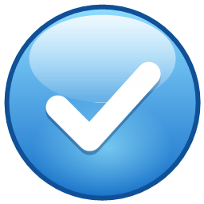

課題ガジェット
Google ClassroomとMoodleの課題の締切を、Windowsのデスクトップにまとめて表示する個人用のガジェットです。
できること
- 課題名と締切から「あと◯日」を表示し、締切が近い課題を目立たせます
- Google Classroomから、まだ提出していない課題と締切を読み取って表示します
- Moodleのカレンダーから、課題の締切を読み取って表示します
- 完了した課題は、ボタンひとつで一覧から消せます
Googleのデータについて
Google Classroomのデータは読み取り専用で使い、利用者のパソコンの中でだけ扱います。開発者のサーバーや第三者には送りません。くわしくはプライバシーポリシーをご覧ください。
Kadai Gadget is a personal desktop widget that shows assignment deadlines from Google Classroom and Moodle. Google user data is accessed read-only and stays on the user's own computer. See the Privacy Policy.